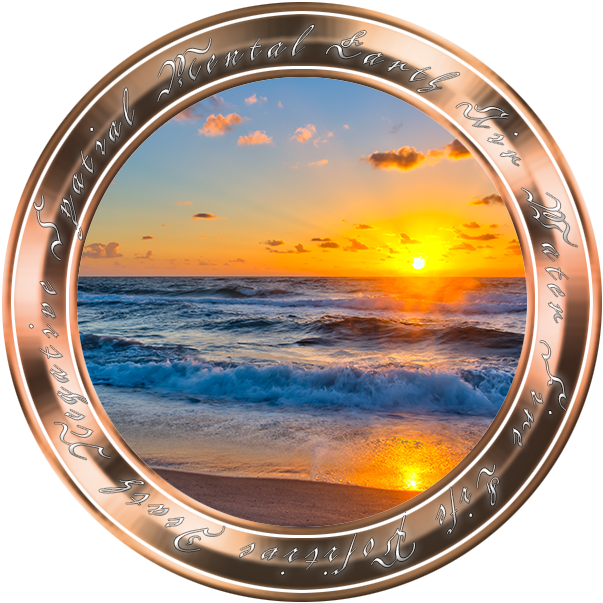
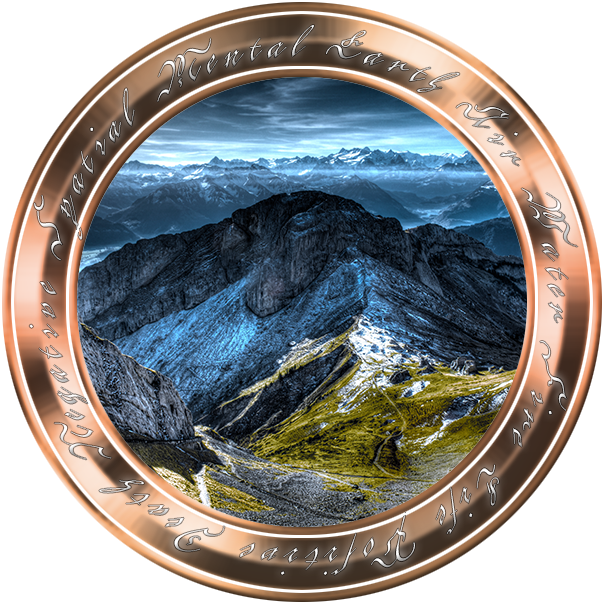
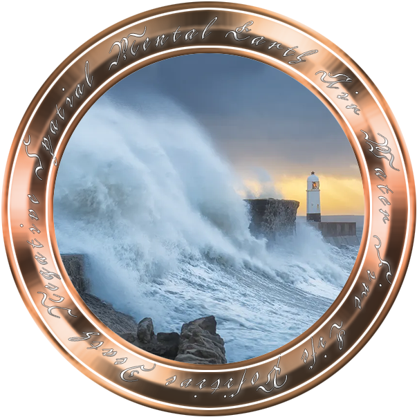
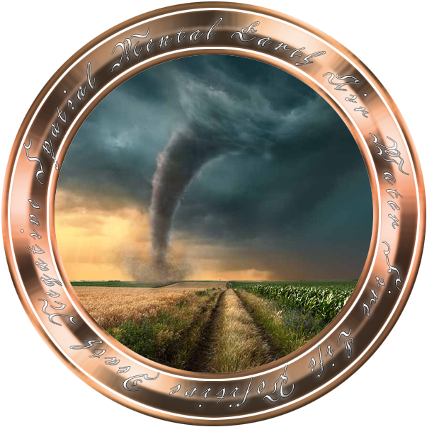

AI Introduction
Sometime later, Dom woke. Ravenously hungry and de-hydrated, he began to pick himself up off the floor. He climbed back up on the couch, and grabbed the water bottle he picked up earlier and chugged it completely. After a few seconds, he needed more.
Moving to the kitchen, he re-filled the water bottle from the fridge's water dispenser, and chugged that too.
Careful. You want to make sure you keep that in your system. Smaller sips would prove more beneficial.
Who am I hearing? Oh Crap, Am I going crazy?
No, you are not having a psychotic episode. You do remember the bonding announcement, correct?
Sort of. I could hear.... something. You sure I'm not crazy?
Yes I am sure. I am an artificial entity, an intelligent program, created for the purpose of teaching the descendants of Enki about their heritage and unlocking their potential. Most of the true bloodline were hidden for years, even when Enki and his brother were still here. Too many others feared their power and potential and started to wipe their descendants out. And Enki was known to be a little... vigorous when it came to having kids.
Who's Enki? What's an Enki, that's a weird name. Wait, "Descendants"....are you saying I'm related, like they're my great great grandfather or something?
Yes, but for who he is, we can discuss that later on. Think of it this way, your genetics indicate you're descended from a very powerful individual, you've inherited some of his potential, and right now, we have to focus on developing out that potential. Which is significant, and you will be noticed very quickly. There are many who would want to control you. Or neutralize you.
I'm so confused. OK, So, what's my potential? Well, I mean, mom always said that my potential was hidden deep down and you won't really know your potential unless you push yourself in the face of adversity.
Your mother was correct.
Ugh.
Just don't... don't tell her that, OK? I'll never hear the end of it, he grumbled. I feel exhausted. Like I've run a marathon and haven't eaten or drank anything in days.
So, the hunger and dehydration are side effects of some of the genetic modifications that are still ongoing, although most of that is now complete. You have been unconscious for approximately 24 ho-
Wait, wait... What... WHAT. HAVE. YOU. DONE??!!
I've unlocked your daimonic power. We will be training to increase your body's power, strength, coordination, and endurance, as well as focusing your mental acuity on tapping into and controlling your elemental manipulation.
Ok. Uh. Um... Demonic power....
Incorrect. DAIMONIC. From the ancient Greek 'δαίμων', which meant 'godlike, power or fate'. Daimons were seen as lesser deities or guiding spirits in the ancient world and could be a power for either good or evil. Or both. Usually they were just obnoxious, depending on their attitude. If you need a comparison, think of the ancient demigods of mythology. Most of them were Daimons actually.
So I have this "daimonic" power now?
Precisely. Therefore, we need to start your training immediately.
OK, we'll be training. Um, why do we need to train? And what was that about the mental focusing something...?
We train so you are not killed by other Daimonic individuals who are afraid of you. Or rather, what you will become. I mentioned this earlier? Regardless, the mental aspects are the Elemental Manipulation skills.
What The HELL??!? Someone's going to try to kill me? Take it Back!!!
That is not possible anymore. The modifications are already well underway, and the nanites are almost fully integrated at this point.
OK, ok, focus on what I can fix now. Ok, so I'll control all of this with my mind or something.
Partially, you will eventually have the ability to psychically interact with various nanites that have been injected into your bloodstream. Your thoughts will influence the nano-machines, and dictate their response. The nanites are what's used for the genome restructuring, as well as manipulating various energy frequencies in the environment. Your body and system are creating more and more nanites as we speak. That is some of the replication that is still ongoing. And will be for some time.
What's the likelihood of these others leaving me alone?
Unlikely. That power, in both your physical changes as well as your elemental strength, will draw out others. You should become quite powerful, if we are given the opportunity. And you aren't killed.
You're just a bundle of sunshine, aren't you?
Hey, what do I call you?
My name is Apkallu.

After a long shower and a double-portioned breakfast, Dom called his office and asked to speak with Mary. He figured no matter what the situation was or what happened to him, as long as he was not bleeding out, she'd want to hear from him and make sure he was ok and everything.
"Mary here, ...Dom, is that you??!? Dom, Are you OK?!"
"Hey Mary, I'm good, not hurt. Just... trying to make sense of everything, I think I'm really messed up mentally on what happened the other night. I crashed unbelievably hard. Pretty sure my body needed it. Sorry I didn't contact you sooner. I just needed time. ...Still do if I'm being honest," Dom replied with a heavy sigh.
"I'll let everyone here know you're ok. We heard and saw on the news some of what happened at the museum the other night and we knew you were headed there. A couple of us were a little freaked out when we didn't hear from you. We're glad you're not hurt, Dom. Are... are you gonna go talk to a therapist or something? Go to your doctor's? I know I would need one."
"Heh, you just want a reason to to talk to people. ...Actually Mary, I think I'm gonna take a break for a bit. A Sabbatical. I saw some things that I'm having a hard time with. I think I'm gonna take a leave of absence. Take some time for myself. Clear some things up." Dom paused. "The platform should be good to go, and I'm leaving the rest of it in your hands. You're in charge, Mary. I'll send an email or something to that effect so our staff and clients know."
"No worries Dom. You're one of my oldest friends, we love you. Also, just remember how much I took care of you during my performance review."
"Oh you're getting a nice fat raise, Mary. I'll email payroll right after this call to make it official as well."
"Take care of yourself Dom, and call us if you need anything." After an extended pause, "I, um, might have family that understands some of what you're going through, if you need a non-medical person to speak to."
"I really doubt that Mary, but thanks for looking out for me. Call you soon." And with that, Dominick hung up.
Kal, you there?
I will always be here Dominick. Have you shortened my name now? A gesture of familiarity and friendship? How can I help you Dom?
Kal feels more natural for me. And everyone calls me Dom, so, back on point, we discussed training. What do we need to do? What's the plan? DO you have a plan?
First, since there are other Daimons actively hunting in this area, we should go somewhere remote, more isolated than here, so we are not discovered. Do you have a location we can use for this?
Maybe... We used to have a time-share near Grand Lake, Colorado. It's really nice and quiet, especially during the winter months. Very private but expensive to stay there.
That is not a problem. Once we have enough control over our elemental manipulation and have sufficient energy reserves to start converting base metals into rare earth elements, most of our issues should be resolved very quickly. At least financially.
Wait, you mean, like a Philosopher's stone and stuff...? You mean like converting Lead into Gold? Dom replied wide-eyed and excitedly.
Yes. Or Palladium, or Rhodium, or anything really. Although inert transition metals are easier to convert. Less taxing energy wise. But that's going to take a couple of weeks to get there.
OK, I can do this. I'll call and book the house now. Nobody is usually there. Too cold the first of the year.
Also, I suggest driving there. It gives us more options, allows for us to hide or react appropriately, if we are discovered. Being stuck in a flying tube does not seem particularly safe to me.
Me neither, Kal. Me neither.

[Location: Grand Lake, Colorado]
After nearly 3 days of driving, Dominick arrived at the rental home in Colorado. While Grand Lake itself was considered a tourist destination during the summer months, during the winter it tended to be more locals. However, Dominick's family had lived there quite a bit over the years. It shouldn't be a problem for him. It only tapered off after Dom's father passed away 3 years earlier. The house was decently sized and had no immediate neighbors to either side, but a truck and a boat for supplies was an absolute must for using the house.
Fortunately Dom remembered that the local grocery store was very small, so he stopped in Granby to pick up most of the food supplies he'd need. Well stocked and finally settled in, Dom assessed the situation.
This should work well. The area has limited access to humans, and plenty of wood, earth, and water elements for manipulation. Additionally, fire manipulation would benefit us against the cold weather. Plenty of food, decent shelter, and privacy. Yes, this should be more than adequate.
You can get a little creepy my friend. Let's not get crazy yet. Ease into the training, yes? And I'm still human, thank you very much.
Take my word, you are NOT entirely human anymore.
That's...fairly unsettling. I mean, I know you're telling me I'm different, and there were changes made to me, and I can do some things now, but I don't feel any different. At least I don't think so.
I find your lack of faith... disturbing.
Movie quotes? Seriously? He groaned.
The museum had decent wi-fi...
Sighing, OK, so what's first?
Now, this is where you should be able to excel past your other contemporaries here, with me as your teacher. I am going to show you past training memories, reconstructions of ancient warlords, and various weapon masters and how they lived and fought. Their training regimens. Then we copy their movements and styles for now. After we've learned the basics and various styles, we'll start to combine them into our own style for maximum effectiveness. We will train every morning before sunrise, until noon. Followed by some refreshments, then we'll work on elemental software code constructs in the afternoon and early ev-
Wait! wait, wait... software code constructs? Wide-eyed, Dom whispered in awe.
Yes, we'll need to do some coding in order to control the nanites to act as we wish. I will show you how it's done virtually. Don't forget, it is your nanites that enable you manipulate the environment. You do remember how to do Encapsulation, Abstraction, Inheritance, Polymorphism...Yes? As you have worked as a programmer before, this seemed an area where you might be the most comfortable. Was I wrong?
No, not wrong. I just didn't expect software coding translated to Magic. That's... friggin' awesome!!! Dom chuckled with a big smile.
Software coding does not translate to magic. Magic does not exist. You are merely programming the nanites in your system to behave and interact with the environment and affinity energy in a certain way, under various trigger conditions. This is science and technology in it's purest, most pristine and elegant form.
I am sooo gonna code me some fireballs. Ooo, maybe some lightning bolts.
sigh, Its going to be a long, long day.

For the first six weeks, the routine did not falter. Kal made sure Dom was up at 4:45am, as promised,a before dawn.
The routine was to hydrate, stretch, run at least a mile if not more, then cooldown. After that, Dom would review and perform a form he learned the previous day, and then work on learning a new form. All while focused on pushing his nanites and energy to help his body grow stronger, rejuvenate faster.
Dom recalled growing up, his father had been a 4th degree black belt in Tang Soo Do. And while Dom learned some good self defense, he never pushed becoming a martial artist like some of his friends and classmates did, wanting to be the next world champion or something like that.
Those experiences and training however, helped him adjust to learning the new forms and techniques Kal was teaching him, very quickly.
Some Dom realized, some of these forms and techniques were variations on modern styles, such as Aikido and Kung Foo. Others looked more... primal, almost animalistic.
Then they moved onto the Elemental energy side of their training.
The next set of exercises, and the foundation for most other external abilities, was the manifestation and pushing out of affinity energy. In some ways, it was its own form of meditation. Some affinity energy could be used for general healing or even creating basic shields. Dom was told however, to not try to 'do anything' with them yet. Just focus on using the nanites to gather and pool the energy.
This however, even with Kal's help and insight, took time. After another couple days though, Dominick's meditation and mental preparation finally paid off. And it appeared, the flood gates of affinity energy opened.
Dom started with the fire element. He called it to him and pooled a small amount within his palm. About the size of a baseball. Then he 'pushed' or threw the energy toward a target. Visualization was the key here. Then, once he could hit his target with one element consistently, he would rotate onto another element, running through each elemental sphere as they were.
Eventually, he was told he could start combining various elements for a myriad of different effects, but for now, stay within a single elemental sphere when training.
It was the end of the second week when they revisited some of the pure energy concepts.
Today, we'll be covering new ground and discussing 'why' we did not touch healing or shielding yet.
OK, I was wondering about that. Especially when, at least to me, was the most area to learn. What new ground are we covering?
So, let's recap. We've pooled our energy, but it's a small amount. The amount of healing this could do is extremely small and limited. Maybe stop some bleeding. Heal a couple of scratches, probably not even all of them. What we would need to do is provide a 'constant flow' of pure healing energy to the target. Continuously replenishing the amount there. This continuous flow, is called channeling.
So we can make how much we heal... variable, Dom replied.
Channeling however, is also the fastest way to completely drain you of energy. And leave you completely weak and vulnerable. Hence, it's taught with an abundance of more caution. More of our kind has been killed or enslaved due to being energy deficient than any other action.
Makes sense. He replied deep in thought.
We'll add channeling to the training regimen for all your elemental affinities. Grab that knife over there by the kitchen. Now, you can stab yourself or some repeated cuts on your hand and forearms should be sufficient to practice your healing abilities.
Rolling his eyes, Dom thought, Great. I'm pretty sure my therapist would be horrified by this conversation. I'm probably gonna need to go pick up some extra bandages, just in case.
